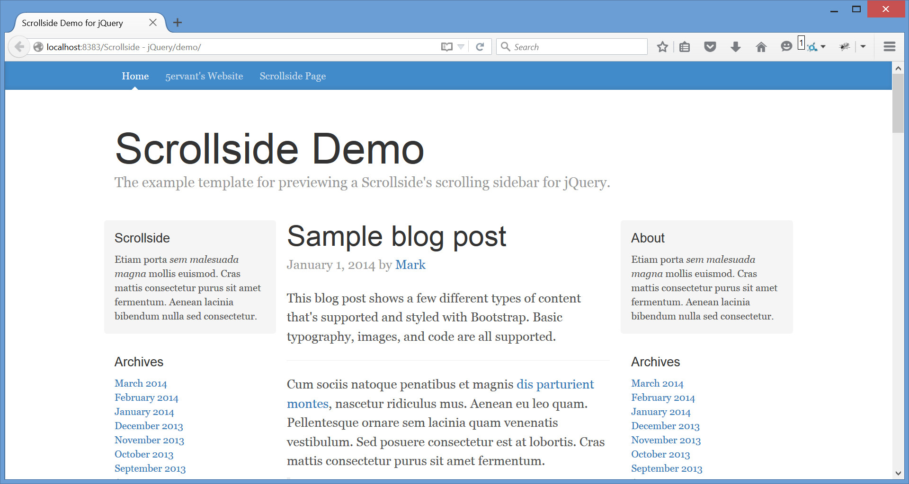
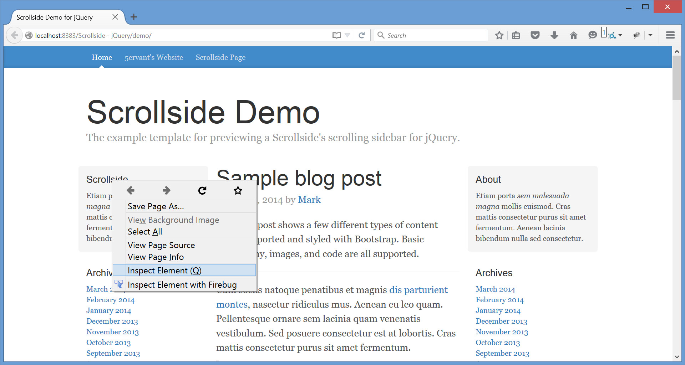
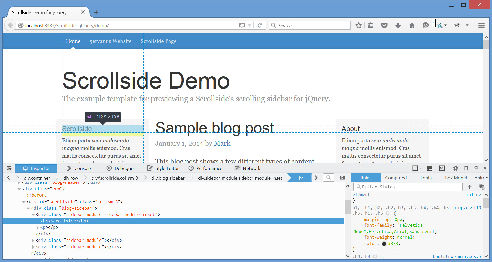

“Scrollside” Documentation by “5ervant” v1.0
“Scrollside - jQuery Scrolling Sidebar”
Updated: 9/20/2015
By: Mark Anthony B. Dungo
Email: 5ervant [@t] protonmail [d0t] com
If you have any questions that are beyond the scope of this documentation, please feel free to email via my user page contact form here.
Table of Contents
A) Getting Started - top
If you already downloaded the Scrollside script, you need to unzip (extract) it, and after that get the "scrollside.js" file inside of the "/scrollside/" folder, upload it to your website and then link it after jQuery to every page that will use this plugin. If you're going to put that JScript into your "/js/" folder, you can then link it like this:
... <!-- jQuery (necessary for Scrollside's JavaScript plugin) --> <script src="https://ajax.googleapis.com/ajax/libs/jquery/1.11.3/jquery.min.js"></script> <!-- Scrollside --> <script src="js/scrollside.js"></script> <!-- Scrollside calls here --> <script> ... </script> </body> </html>
B) Selecting Elements - top
To use this script effectively, your sidebar must inside of a container element and that container must inside of a row element that contains the other column(s) including the main element.
Lets say we have this page:
{kind=link}
We can find the element of our sidebar's row by starting to point our mouse to the very top content of our target sidebar then click the right mouse button and after that click "Inspect element":
{kind=link}
Here's the example that you'll going to see after the previous instruction:
{kind=link}
Now try to point your mouse to the HTML element that contains your sidebar's container, main content/element and other element(s) if any, and get its unique class or id. In our example the row's selector that we've got is '.row' and we need to keep that but not necessary if we're using Bootstrap grid system.

And the most required selector that we need to get is for the container of our sidebar, which in our case is '#scrollside' and we will need that to call the Scrollside's JavaScript plugin with its initializer function. To see that you need to point your mouse to the element that contains your sidebar, if your sidebar doesn't have a parent container then you can edit its code and wrap your sidebar's HTML inside of a <div id="identifier">SIDEBAR</div> tag. But in most cases, if your sidebar have an inner sidebar, you can make your outer sidebar as your sidebar's container and its inner as your sidebar and see if it'll work!
{kind=link}
And '.blog-sidebar' is the selector for our sidebar in this example. Remember that the sidebar must inside of its own parent container!
{kind=link}
The selectors that we got are '.row', '#scrollside' and '.blog-sidebar'. There are many kinds of selectors that we can use to get the elements that we need, but the two basic selectors that we used are a class selector that preceded with a dot like '.class' and an ID selector that preceded with # like '#id', for more info please visit: https://api.jquery.com/category/selectors/
C) JavaScript - top
If we already got the necessary selectors, we can now then call the Scrollside plugin via JavaScript like this:
...
<!-- Scrollside calls here -->
<script>
$( '#scrollside' ).scrollside( {
rowSelector: '.row',
mobileWidth: 767
} );
</script>
</body>
</html>
- We have selected the
#scrollsideelement as our sidebar's container to call the initializer function. - We've set the class
'.row'as our rowSelector, as our sidebar will not continue moving when its top or bottom reach the end of its own respective row's borders. - We've set 767 as our mobileWidth which means our sidebar's margin-top will set back to 0 when our browser viewport's width become 767px or below and will start scrolling again when the viewport become above 767px of width.
- And we can take the sidebar's selector for granted if the first child of the
#scrollsideelement that we've selected to call the initializer, is the sidebar, but anyway you can specify it by providing a sidebarSelector if necessary.
If you're using Bootstrap 12-column grid system, then you can easily call the initializer function without rowSelector like the following:
$( '#scrollside' ).scrollside( {
mobileWidth: true
} );
- It's because the default rowSelector is already
'.row', Bootstrap predefined grid classes ready! - You need to set the mobileWidth to
trueto make the mobile responsiveness of your scrollside rely in a predefined.col-*-*grid class on your sidebar's container or scrollside element.
| Name | Type | Default | Description |
|---|---|---|---|
| rowSelector | string | '.row' | A .class-name, #id-attribute or any jQuery selector for the parent row of the sidebar's container, main content and the other element(s) if any. |
| sidebarSelector | string | '>:first-child' | Selector for the sidebar inside of the sidebar's container or scrollside. Remember, every scrollside's element must have its own child sidebar! |
| mobileWidth | number | 767 | The specific max-width in pixels, of the document for mobile view where the sidebar's top-margin will set back to its original position. |
| mobileAnimate | string | 'auto' | Must be 'auto', 'css' or 'scroll'. Mobile animation will only perform if the desktop view become mobile view. The default 'auto' will automatically scroll back the sidebar to its original position, setting to 'css' will auto set back the sidebar without animation, and 'scroll' is just like the 'auto' but the animation will only perform when you scroll. |
| topPadding | number | 15 | An additional top padding in pixels, of the sidebar when it's moving. |
| topPaddingDecrement | number | -15 | Must be a negative number, it's the topPadding decrementation between the sidebar's bottom and the row's bottom. |
| scrollDuration | number or the string 'fast' or 'slow' |
400 | Milliseconds to complete the sidebar animation per scroll. The strings 'fast' and 'slow' can be supplied to indicate durations of 200 and 600 milliseconds. |
| mobileDuration | number | 2000 | Milliseconds to complete the moving back to the original position of the sidebar if the desktop view become mobile view. And will only effect when the mobileAnimate is not set to 'css'. |
Here's how to initializes with complete options:
$( '#scrollside' ).scrollside( {
rowSelector: '.main',
sidebarSelector: '.sidebar',
mobileWidth: 767,
mobileAnimate: 'auto',
topPadding: 50,
topPaddingDecrement: -100,
scrollDuration: 300,
mobileDuration: 1500
} );
D) Other Features - top
Here are some features that need an overview:
- You can use a class selector to select multiple sidebars' containers on your page and to call the initializer function once for multiple scrollsides:
$( '.sidebar-container' ).( options );
- If the row's height is unexpectedly increasing when the sidebar's bottom is reaching the row's bottom (this may be happened if the sidebar isn't the first child element of the scrollside), then you can try to make the topPaddingDecrement more negatively like this:
$( '.sidebar-container' ).( { topPaddingDecrement: -50, // other options } ); - And also, it's Bootstrap 12-column grid system compatible! No need to specify the rowSelector, just set the mobileWidth to
trueand it will track the class prefix.col-*-of your scrollside as your mobileWidth.
E) Sources and Credits - top
I've used the following JScripts as listed.
- jQuery JavaScript Library (Contributor)
- Responsive Bootstrap Toolkit (Contributor)
I'd be glad to help you if you have any questions relating to this item. No guarantees, but I'll do my best to assist. If you have a more general question relating to the items on CodeCanyon, you might consider visiting the forums and asking your question in the "Item Discussion" section.
5ervant (Mark Anthony B. Dungo)